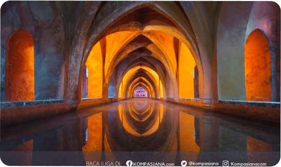

Menjadi Anak Muda yang Produktif
Kita sebagai generasi muda yang masih berjiwa besar dan bersemangat tinggi harus mempunyai motivasi tinggi dalam hidup. Kita harus mempunyai harapan dan keinginan yang besar agar menjadi manusia yang berhasil. Dengan begitu kita akan berusaha untuk mencapai hal yang kita inginkan di masa depan.
Sebagai anak muda kita tidak boleh sebagai 'kaum rebahan' saja, tetapi kita harus menjadi orang yang penuh dengan semangat untuk melalukan kegiatan positif. Anak muda pasti sedang dalam mencari jati dirinya, sebab itu kita perlu adanya rasa penasaran untuk mengetahui banyak hal. Kita perlu mengeksplorasi dunia yang kita huni dalam artian yang positif.
Kita juga perlu mengetahui mana yang baik dan yang buruk agar kita tidak salah dalam mengambil jalan hidup. Agar lebih menjadi manusia yang produktif kita harus memprioritaskan mana yang lebih penting. Kita dapat melakukan pekerjaan yang tingkat kesulitannya lebih sulit. Lalu, jika sedang banyak kegiatan yang dilakukan, jangan menunda-nunda hal yang harus kita lakukan agar tidak membuang waktu dan tidak menumpukan banyak pekerjaan lainnya. Kita dapat menulis jurnal atau 'to do list' yang minimal berpatokan pada hari ini. Yang paling berpengaruh kita harus dapat mengoptimalkan penggunaan teknologi. Dengan adanya internet jadikan itu sebagai fasilitas untuk mendukung diri kita menjadi lebih berkembang. Jadikan sebagai tempat kita mencari informasi. Kita juga harus memperbanyak relasi agar mempunyai koneksi yang luas. Tetapi harus memilah pula mana orang yang berpengaruh positif mana yang tidak. Agar kita selalu didukung harus dikelilingi orang yang positif. Dengan kita banyak mengetahui berbagai hal kita dapat menemukan apa yang kita dapat kuasai, apa yang kita suka, dan bagaimana cara mengekspresikan diri. Dengan begitu kita menjadi anak muda yang berkembang. Hal-hal yang kita jalani dan pelajari dapat kita lakukan untuk mencapai hal yang kita cita-citakan di masa depan.